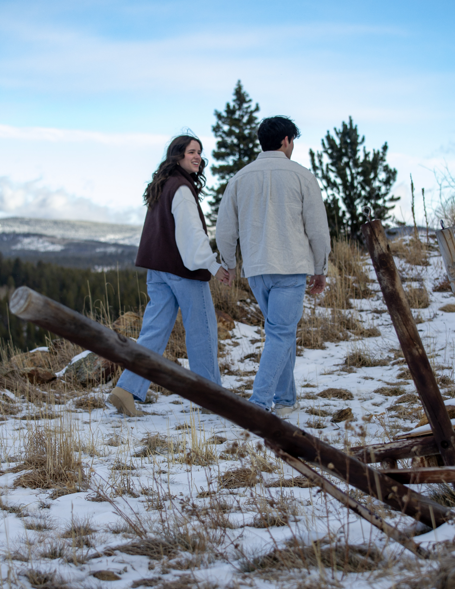
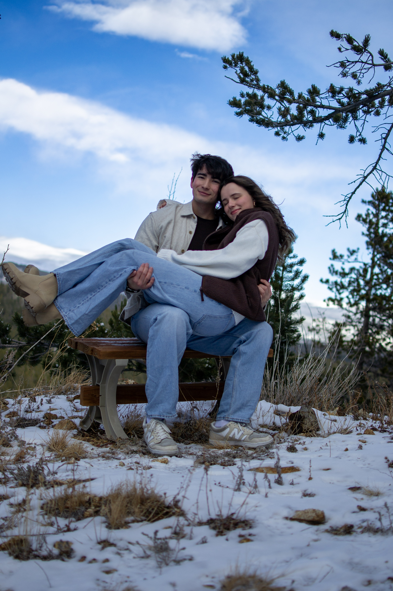

Engineering classes, labs, study days, and regular campus life gave us the time and space to build our friendship and relationship.
Our Story
Met at UTSA.
We met at UTSA in engineering school, started dating at the end of freshman year, and graduated together in Spring 2026. What began in the middle of classes, labs, and long study days grew into a relationship that carried us all the way to graduation and into this next season together. UTSA was where our story started, and those years shaped so much of who we are together.
We kept growing together through school and are thankful for the people who supported us and celebrated those milestones with us.
Graduation
Spring 2026.
Finishing school together became one of the clearest markers of how far we had come since the start of freshman year.


Colorado Winter Trip
Cold air, mountains, and one of our favorite photo sets.
The Colorado trip gave us a completely different backdrop from campus and graduation. The mountain views, snow, and quiet winter feel made it one of our favorite seasons to look back on together.
Trip Notes
Winter in the mountains
These photos carry a more relaxed, outdoors-focused part of the story and pair naturally with the graduation set above.





Why It Matters
A different chapter
UTSA explains where we started, graduation marks a milestone, and Colorado adds the quieter travel memories that feel just as much like us.
Looking Ahead
From these chapters into marriage.
Then
Built through school and shared milestones
College, graduation, and trips like this became the foundation for the season we are in now.
Now
Wedding planning with the same people beside us
The same support system that showed up during school and graduation is the one we are grateful to have with us as we prepare for the wedding.